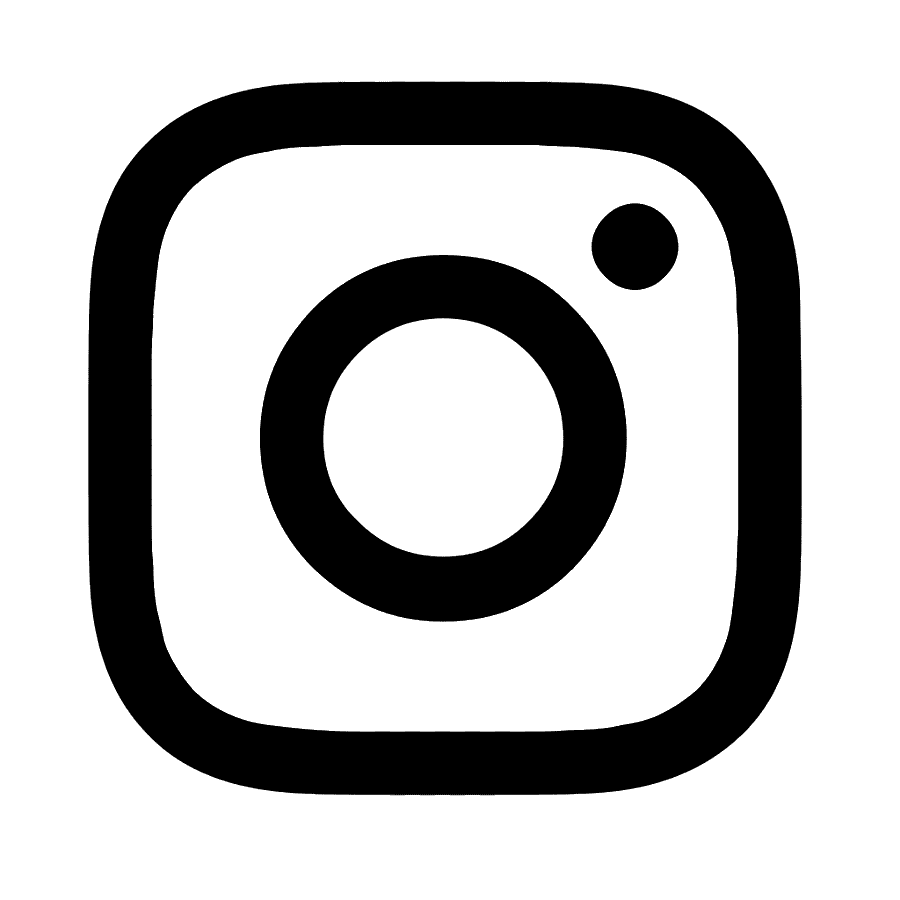
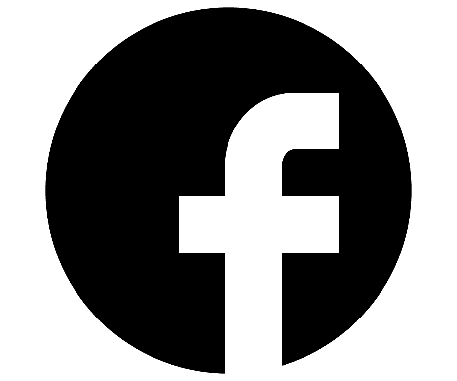

Quem somos
Somos uma ONG de Belo Horizonte, cujas ações e projetos já ajudaram mais de 4.500 pessoas. Nossa história começou em 2016 e todo trabalho que desenvolvemos nos levou a Brumadinho (MG), após o rompimento da barragem da Vale. Desde então, as ações sociais desenvolvidas no município fez com que a NaAção crescesse e pudesse levantar recursos e pessoal para atender mais comunidades que vivem em situações de risco. Portanto, nossa atuação cresceu muito a partir do trabalho feito junto aos moradores de Brumadinho, após o rompimento da barragem em janeiro de 2019. Acreditamos na necessidade da continuidade e, principalmente, da construção de possibilidades para criação de autonomia nessas comunidades.
Projetos
Saiba como funciona cada um dos nossos projetos.
-

Arrecada Alimentos
-

Arrecada Agasalhos
-

Arrecada Materiais Escolar
-

Arrecada Brinquedos
Como doar
É possivel doar em nossas ONGs físicas ou através do WhatsApp.


Redes sociais
Conheça nossas plataformas.
 